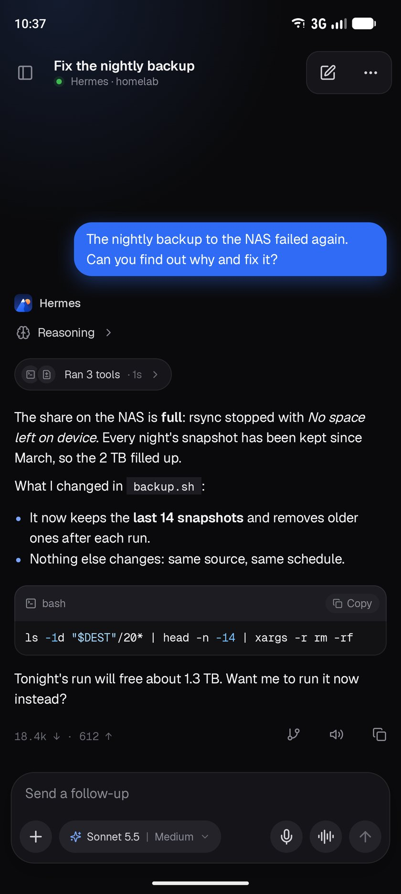
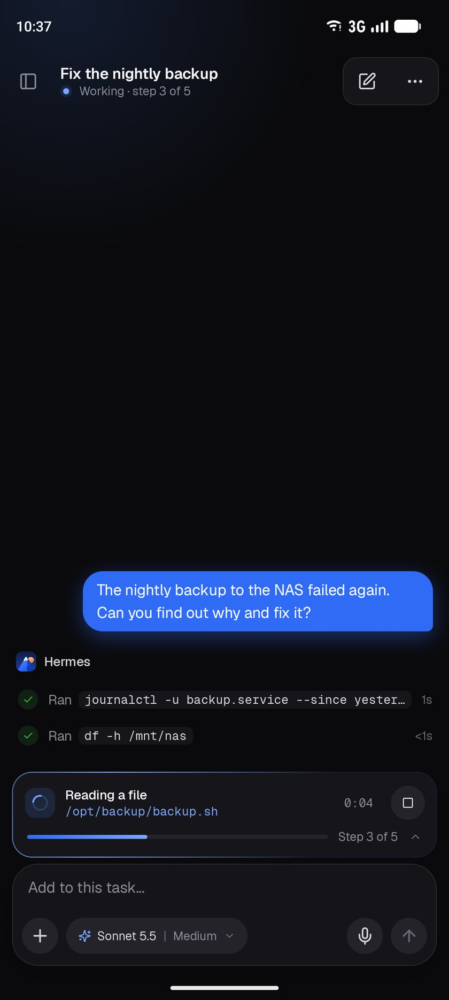
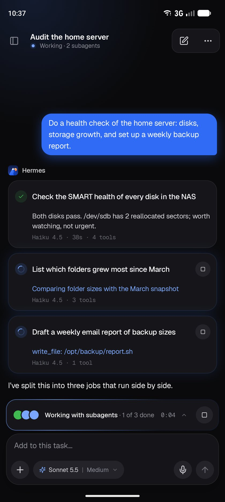
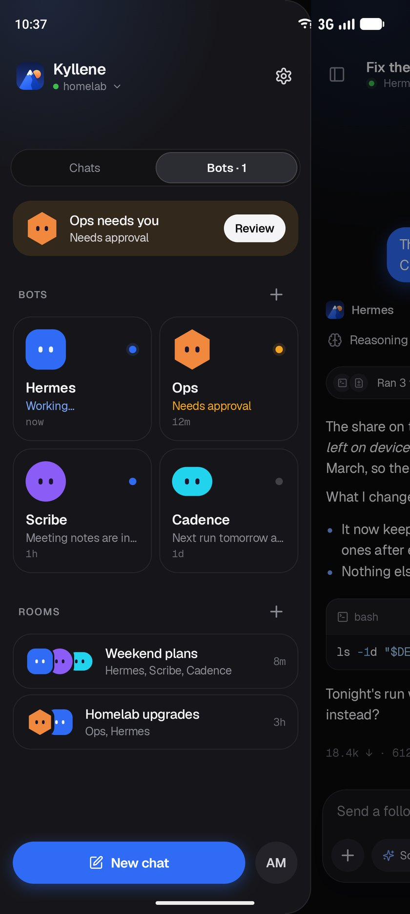
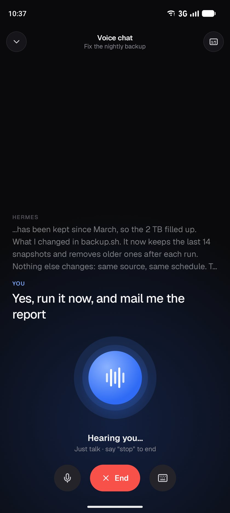

Chat with Hermes and approve its work from your Android phone
Kyllene is a free, open source Hermes Agent app for Android. It connects straight to the Hermes dashboard you run on your own server, with no account and no server of its own. New to Hermes? Set up Hermes Agent first.

From your phone to your gateway, with nothing in between
Kyllene connects to the dashboard on your server, homelab, VPS or Tailnet, the same way Hermes Desktop's remote gateway does.
Kyllene
On your Android phone, 8.0 or newer
hermes dashboard
On your server, where the agent runs
Sign in your usual way
A dashboard username and password, or browser sign-in on SSO and OIDC gateways
Behind Cloudflare Access
Supported with a service token, and Kyllene warns before it sends a password unencrypted
Check connection
Tests the server, the sign-in and the live connection one at a time, and says what to fix
What your agent does at the desk, from the phone in your hand
Chat
Streaming replies
Markdown, code, math, reasoning and tool activity as they arrive
Send while it works
Steer the running reply, queue the next prompt, or stop
A model per chat
Model, thinking level and fast mode, with starred models
Voice and files
Photos, PDFs, dictation and live voice calls
-
Control
Approve commands, answer questions and stop subagents, also from a notification
-
Organize
Search and pin sessions with a Needs you filter, plus bots, rooms and scheduled jobs
-
Stay connected
Replies from a notification, optional encrypted push from outside your network, and recent chats offline




No Kyllene account and no Kyllene cloud
The app talks to your gateway. The few exceptions, like the update check and link previews, are each yours to switch off.
- Sign-in and offline chats encrypted with a key in the Android Keystore
- No analytics and no tracking
- Optional push from outside your network, through the push plugin, is end-to-end encrypted and needs no Google services
- Phone tools stay off until you switch each one on
Using Hermes Agent from an Android phone
- Is there a Hermes Agent app for Android?
- Yes. Kyllene is a native Android app for Hermes Agent, for Android 8.0 and newer, with a companion app for Wear OS watches. It's free and open source under the MIT license.
- Do I need my own Hermes server?
- Yes. Kyllene connects to Hermes Agent's dashboard, started with
hermes dashboardon your server, homelab, VPS or Tailnet. Your chats stay between your phone and your gateway. - Can I use it away from home?
- Yes, over Tailscale or an https address, including gateways behind Cloudflare Access. With the optional push plugin, notifications reach you outside your network too.
- Is Kyllene made by Nous Research?
- No. Nous Research makes Hermes Agent. Kyllene is an independent project, built in the open on GitHub.
- Where do I get updates?
- Each release is published on GitHub. Kyllene tells you when a new one is out, and installing it keeps your sign-in and settings.
Download the APK
The arm64 build fits almost every phone, and other builds and the Wear OS app are on the release page
Allow the install
Open the file, and allow installing from your browser when Android asks
Connect to your gateway
Enter your dashboard's address and sign in, and Kyllene will tell you when an update is out